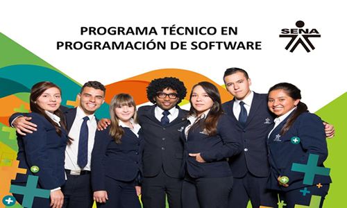

CONTABILIDAD
La modalidad de contabilidad del SENA es un programa de formación que se enfoca en capacitar a los estudiantes en el registro y control de las operaciones contables de una empresa o entidad. Este programa se ofrece en diferentes modalidades, como presencial, virtual y mixta. Los temas incluyen teoría contable, registro de transacciones, manejo de cuentas, elaboración de estados financieros e interpretación de información contable. El objetivo es formar profesionales competentes en contabilidad para empresas o entidades, utilizando software contable para llevar a cabo las operaciones contables.
SOFTWARE

La modalidad de software del SENA es un programa de formación en el que se enseña a los estudiantes a utilizar herramientas y aplicaciones informáticas para el desarrollo de proyectos y solución de problemas en el ámbito tecnológico. Se ofrece en diferentes modalidades y cubre temas relevantes como programación, diseño gráfico, bases de datos, análisis de datos y desarrollo de videojuegos, entre otros. Los estudiantes aprenden a utilizar diferentes herramientas de software como Microsoft Office, Adobe Creative Suite, Oracle, Java, Python, entre otros.
MULTIMEDIA
La modalidad de multimedia del SENA es un programa de formación que busca enseñar a los estudiantes a crear y producir contenido multimedia en diferentes modalidades, ofreciendo cursos en producción de video, animación, diseño gráfico, edición de audio y video, fotografía, entre otros. El programa utiliza herramientas y programas especializados para crear contenido multimedia de alta calidad para diferentes propósitos, como publicidad, entretenimiento y educación.